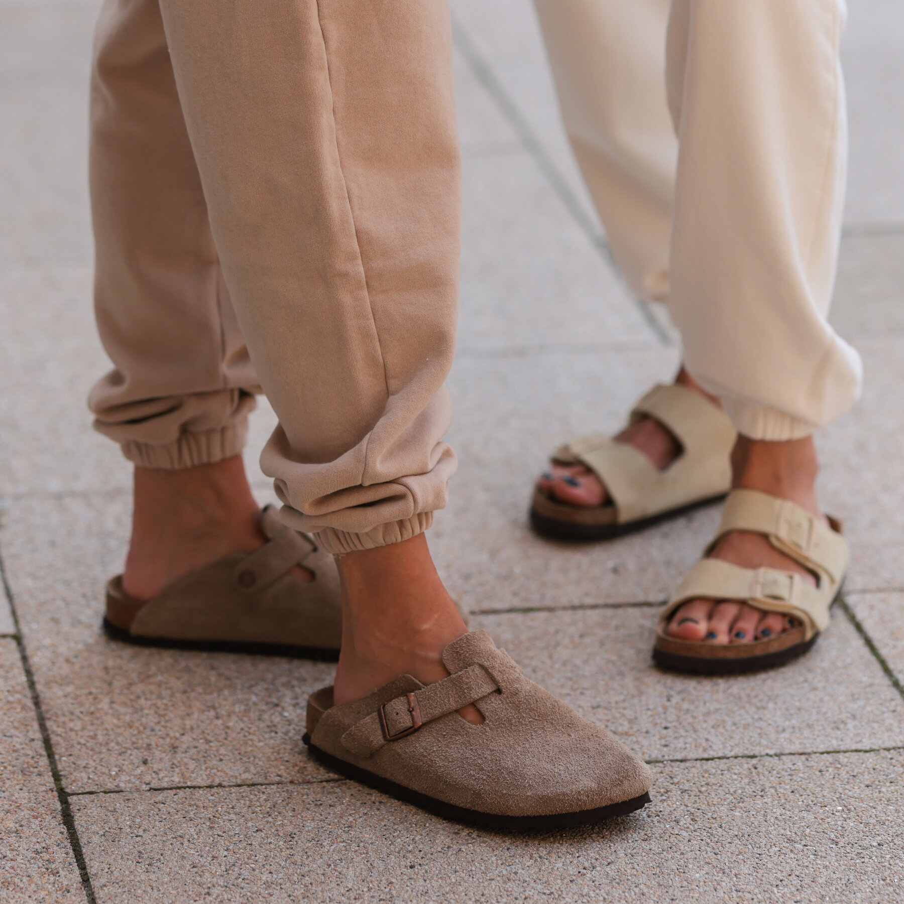

Boston Soft Footbed
Our most sought-after clog, the Birkenstock Boston Clog lends a fashion-forward edge to any style. Its velvety suede gives the laid-back look classic, every season appeal. The nature-inspired design is evident from the soft suede upper, which hugs the foot like second skin. Featuring an additional foam layer for cushioning, the soft footbed offers extra comfort plus go-all-day support.
Cushioned BIRKENSTOCK soft footbed creates custom support with wear
Classic suede upper
Suede footbed lining helps keep you comfortable
EVA sole is flexible and lightweight
Adjustable strap with metal pin buckle
“Made in Germany” quality stamp on footbed
